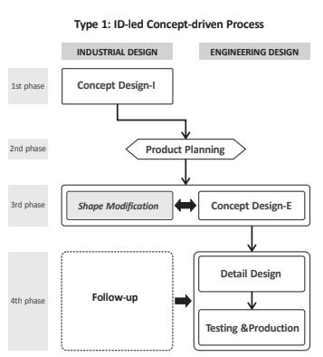

Assignment2 <<
Previous Next >> Topic 1
Topic 0
DigitalProductCollaboration+IndustrialAndEngineeringProductDesignCollaboration
DigitalProductCollaboration
本章闡述何為協同、為甚麼要協同、協同的好處、協同時如何使用的工具及合作流程
協同工具介紹:
FIGMA
這是一個協同共享工作區。 Figma非常適合在設計文件以多人方式同時進行。您可以即時觀看隊友的設計或在同一個設計上一起工作。
MARVEL
雖然Figma傾向更自由和靈活，但Marvel允許採用更標準化的協同形式。
Zeplin
Zeplin是一個傳遞工具，使開發人員可以深入研究設計工作的細節。
Quip
Quip是集思廣益和產品/過程文檔的絕佳平台。使用它來記錄和組織團隊成員在工作時需要知道的所有上下文和知識，對於創新也很有用。
合作流程:
1.架構及思考
根據客戶需求和項目以粗略的概念與客戶達成初步的想法。
2.研究與背景
與各方設計師一同研究任務，一方面了解目標及挑戰另一方面了解這項計畫的可行性。
3.省思及回饋
藉由各方設計師的討論激起更多想法並以客戶端為這產品預作設想，確保產品可行性及市場的接受度。
4.客戶回饋與發展
產品設計後期，產品架構通過客戶及上司的認可後，此設計架構將會更廣用於各個技術成面。
IndustrialAndEngineeringProductDesignCollaboration
透過系統性的規劃將繁雜的設計流程簡化並以圖表顯現
完整設計流程:
簡化設計流程:
文章中也舉例透過不同設計師設計出的流程表會有些不同，並強調協同的重要性
類型一 由工業設計師主導

類型二 由工業設計師及工程設計師主導
類型三 由工業及工程組成一個工程組成一個團隊主導
類型四 由工業及工程組成一個工程組成一個團隊主導，並加入設計及生產的流程規劃
Assignment2 <<
Previous Next >> Topic 1